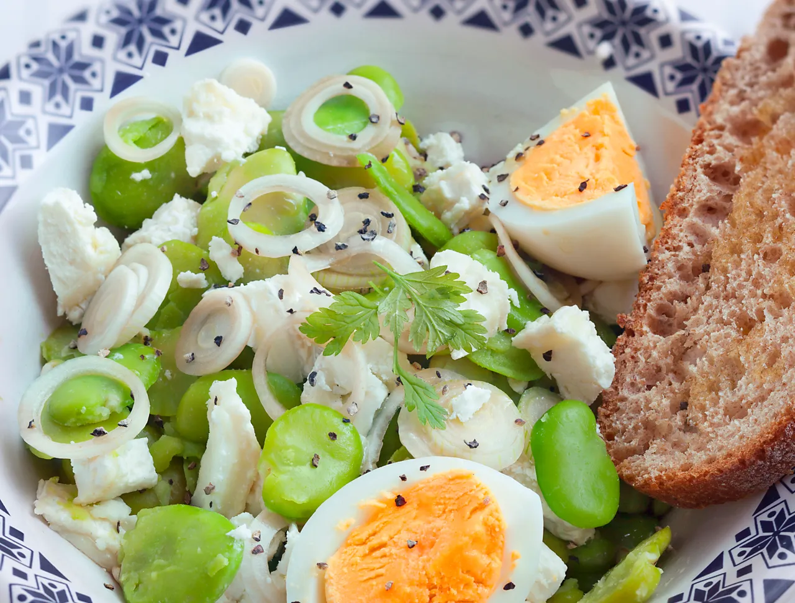

Libro de recetas !
SALADE DE FEVES AUX OEUFS ET CHEVRE !
- Préparation : 30 min
- Cuisson : 5 min

Ingrédients
- Fèves fraîches : 1.5 kg
- Fromage de chèvre : 70 g
- Oeufs : 2
- Oignons : 1
- Pain : 1 miche
- Brin de thym / sariette
- Huile, ail, vinaigre
Préparation
Voici les étapes à effectuer :- Emincer l'oignon en fines lamelles. Les poser dans un saladier, mouiller de vinaigre, saler et laisser macérer 20 minutes pour les rendre plus tendres.
- Cuir les oeufs durs et les couper en quartiers.
- Ecosser les fèves, les cuire 5 minutes à l'eau bouillante bien salée avec le brin de thym. Egoutter et rincer sous l'eau froide pour stopper la cuisson. Lorsqu'elles sont froides, ôter leur seconde peau.
- Verser l'huile d'olive sur les oignons. Ajouter les fèves, le fromage de chèvre coupé en petites lamelles et les oeufs durs. Salez et poivrez.
BOULGOUR POTIRON BLEU !
- Préparation : 5 min
- Cuisson : 35 min

Ingrédients
- Oignon : 1
- Potiron / courge : 600 g
- Boulgour : 150 g
- Crème liquide : 200 ml
- Bleu : 70g
Préparation
Voici les étapes à effectuer :- Cuire le potiron à l'eau. Arrêter la cuisson avant qu'il ne se délite (30 min).
- Cuire le boulgour dans une casserole séparée.
- Une fois cuits, mélanger les deux. Ajouter la crème et cuire encore un peu.
- Ajouter le bleu en fin de cuisson pour qu'il se tienne.
CROQUETTES DE LENTILLES AU MAIS !
- Préparation : 20 min
- Cuisson : 30 min

Ingrédients
- Lentilles : 1 boîte
- Maïs : 1 boîte
- Oignon : 1
- Persil : 1 bouquet
- Farine : 50 g
- Chapelure : 50 g
- Oeufs : 2
- Graines de pavot
- Huile, sel, poivre
Préparation
Voici les étapes à effectuer :- Égouttez les lentilles et le maïs.
- Pelez et coupez l'oignon. Lavez le persil et détachez les feuilles.
- Mixez grossièrement les lentilles avec l'oignon et le persil.
- Ajoutez la farine et les œufs pour obtenir une pâte consistante, puis les graines de pavot et le maïs. Mélangez.
- Confectionnez des croquettes dans vos mains farinées.
- Étalez la chapelure dans une assiette creuse et roulez y les croquettes.
- Dans une sauteuse, faites dorer les croquettes dans l'huile 5 min de chaque côté. Égouttez sur du sopalin.
RISOTTO AUX POIREAUX ET JAMBON SERRANO !
- Preparacion : 15 min
- Cuisson : 30 min

Ingrédients
- Riz à risotto : 300 g
- Bouillon de volaille : 30 cl
- Vin blanc sec : 10 cl
- Oignon : 1
- Parmesan : 80 g
- Beurre : 40 g
- Jambon Serrano : 4 tranches
- Poireaux : 4 blancs
- Sel, poivre
Préparation
Voici les étapes à effectuer :- Laver les poireaux et les faire bouillir 25 min.
- Ciseler l'oignon et rincer le riz jusqu'à ce que l'eau rendue soit claire.
- Dans une sauteuse, faire fondre 20 g de beurre. Ajouter oignon et riz.
- Chauffer 2 min à feu doux en remuant.
- Monter le feu, verser le vin blanc et attendre l'évaporation du liquide, puis faire pareil avec le bouillon.
- Ajouter la moitié du parmesan et 20g de beurre. Couvrir et laisser reposer 5 min. Saler et poivrer.
- Emincer les blancs de poireaux.
PUREE DE POIS CASSES AU LARD !
- Préparation : 15 min
- Cuisson : 1h15 min

Ingrédients
- Pois cassés secs : 400 g
- Pommes de terre : 400 g
- Talon de jambon / lard (pour le goût à la cuisson).
- Poitine fumée : 4 tranches
- Oignon : 1
- Lauier, thym
- Sel, poivre
- Jus de viande
Préparation
Voici les étapes à effectuer :- Eplucher les pommes de terre (les garder entières).
- Couper l'oignon en 4.
- Mettre les pois cassés dans un grand faitout avec l'oignon, les pommes de terre, le talon de jambon, le laurier, le thym et poivrer.
- Mouiller un peu plus qu'à hauteur.
- Cuire dans l'eau frémissante 1h15.
- En attendant, faire griller les tranches de poitrine fumée.
- Enlever la viande et les herbes. Mixer.
- Assisonner et ajouter le jus de viande.